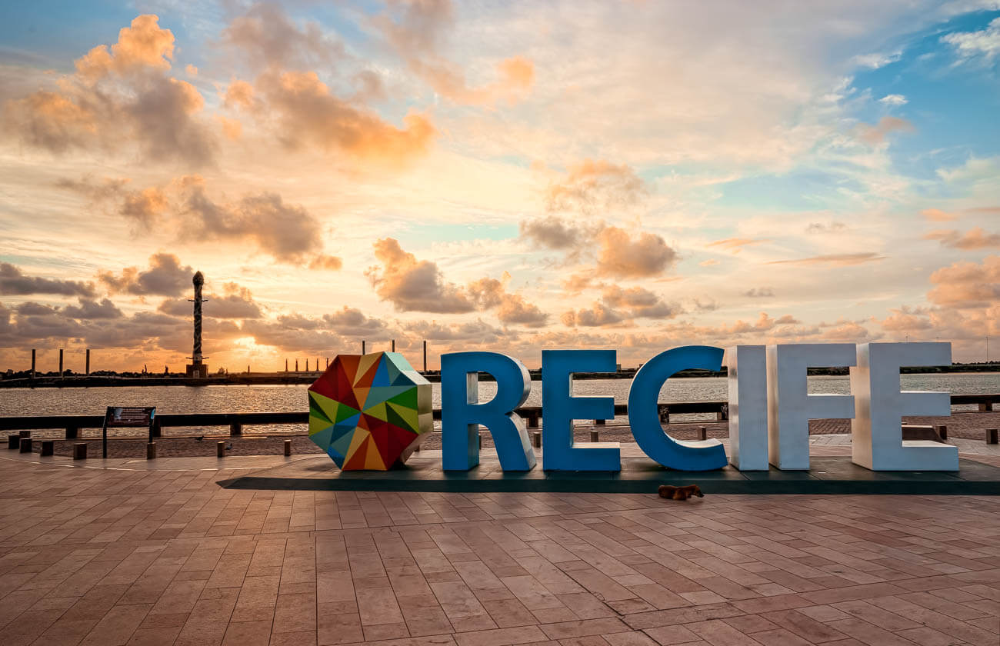

A cidade
Porta de entrada do Nordeste brasileiro, Recife além de belas paisagens - com pontes e rios cortando toda a cidade, atrai milhares de turistas todos os anos. Rica em manifestações culturais e folclóricas, suas raízes estão sempre traduzidas em sua essência artística e preservadas como importante patrimônio.
Em grandes eventos como seu famoso Carnaval, o som do frevo arrasta multidões embalando o desfile de blocos e troças, que se misturam a outros ritmos como maracatu, caboclinho, forró, ciranda, coco de roda e até mesmo música eletrônica. O grande destaque é o Galo da Madrugada - reconhecido como o maior bloco carnavalesco do mundo pelo Guiness Book - que entoa pelas ruas do Bairro de São José, há 36 anos: “Ei pessoal, vem moçada! Carnaval começa no Galo da Madrugada”.
O São João é outro evento com inúmeras atrações nos principais polos dos festejos juninos: Sítio da Trindade, Parque Dona Lindu, Pátio de São Pedro, Rua da Moeda e Praça do Arsenal. Arraste o pé ao som da zabumba e sanfona e vivencie de perto esta tradição.
Mas não só de festa vive Recife. Com mais de 1,5 milhão de habitantes, a região metropolitana da capital pernambucana tem um aglomerado econômico de grande densidade e liderança regional, abrigando as principais indústrias do Estado e consolidando-se como um moderno polo de serviços. Recife é considerado o primeiro polo gastronômico do Nordeste, o segundo polo médico do Brasil, além de abrigar o maior parque tecnológico do País, conhecido como Porto Digital. Recife é tudo isso. Bela por natureza. E cheia de personalidade.
Texto retirado do site da Prefeitura de Recife.